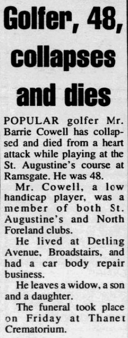

Barrie Ernest Cowell 1943 - 1991
[ Home ] | [ Calendar ] | [ Surnames Index ] | [ Errors ] | [ Family History ]The younger of 2 children of Charles Cowell (a lorry driver) and Edith Bailey, Barrie Cowell, a cousin on the mother's side of Nigel Horne, was born in Thanet, Kent, England on 18 May 19431,2,3. He married Mary Atkins in Romford, Essex, England around Nov 19635. In 1991, he was living at 22 Detling Avenue, Broadstairs, Kent, England.
He died on 29 Nov 1991 in Thanet3,4 (died of a heart attack on St. Augustine's golf course).
Parents
- Charles John was born on 4 Jan 1911
- Edith Mary was born on 13 Feb 1914
Citations
- England & Wales deaths 1837-2007 - Findmypast
- England & Wales, Birth Index: 1916-2005 Online publication - Provo, UT, USA: The Generations Network, Inc., 2008.Original data - General Register Office. England and Wales Civil Registration Indexes. London, England: General Register Office. © Crown copyright. Published by permission of the Cont
- England & Wales, Death Index: 1984-2005 Online publication - Provo, UT, USA: The Generations Network, Inc., 2007.Original data - General Register Office. England and Wales Civil Registration Indexes. London, England: General Register Office. © Crown copyright. Published by permission of the Cont
- England & Wales Government Probate Death Index 1960-2019 - Findmypast
- England & Wales Marriages 1837-2005 - Findmypast
Media
Thanet Times - 10 Dec 1991

England & Wales births 1837-2006 - BMD/B/1943/2/AZ/000272/111
England & Wales deaths 1837-2007 - BMD/D/1991/12/78352364
England & Wales Government Probate Death Index 1960-2019 - GBOR-GOVPROBATE-A-1990-1992-00138573
England & Wales marriages 1837-2005 - BMD/M/1963/4/AZ/000198/015
Family Tree

Map
Generated by ged2site. Last updated on Jul 3, 2024
Known Issues
Residence record for 1991 contains no citation
Listed in the residence for 1991, but spouse Mary Atkins is not